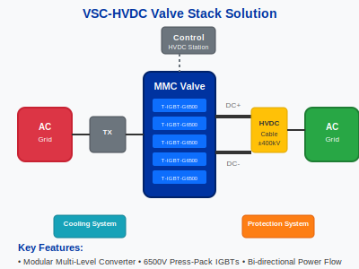

Power Semiconductor Solution for VSC-HVDC Valve Stacks
Voltage Source Converter (VSC) based High-Voltage Direct Current (HVDC) transmission is key to building modern, flexible smart grids. This solution focuses on the core of the VSC system: the valve stack, built with ultra-high-voltage press-pack IGBTs for maximum reliability.
Key Advantages
- Designed for Series Connection: Press-pack devices are ideal for stacking to achieve the hundreds of kilovolts required for HVDC lines.
- Redundancy and Reliability: The press-pack design allows for "short-on-fail" behavior, enabling the converter to continue operating even if a single device fails, preventing catastrophic shutdowns.
- Superior Thermal Management: Double-sided cooling in press-pack modules allows for highly efficient heat extraction, critical for continuous high-power operation.
Recommended Bill of Materials (BOM)
| Component Role | Recommended Part Number | Reason |
|---|---|---|
| Core IGBT Module | T-IGBT-G6500 | 6500V blocking voltage and robust press-pack package make it the ideal building block for MMC sub-modules. |
| Freewheeling Diode | [Matching Press-Pack Diode] | A corresponding press-pack diode is required, matched to the IGBT's voltage and current ratings. |